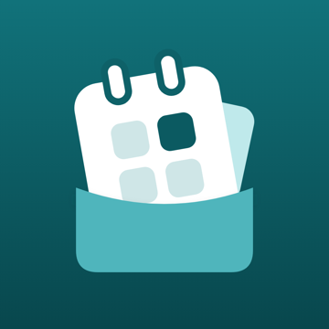

Soru, hata ya da önerin için e-posta gönder: cebimdeapp@gmail.com
Hata bildirirken ekran görüntüsünde gerçek banka ve tutar bilgisi olmamasına dikkat et. English below
Eski telefonda Ayarlar > Verilerim > "Tam veri dosyası oluştur" ile bir yedek dosyası al ve Dosyalar'a ya da iCloud Drive'a kaydet. Yeni telefonda uygulamayı ilk açarken "Yedekten başla"yı seç ve bu dosyayı göster. Veri iCloud yedeğiyle kendiliğinden taşınmaz.
Telefondaki bütün Cebimde verisi silinir. Yedek dosyası almadıysan veri geri getirilemez; bizde bir kopyası yoktur.
Hayır. Uygulama hesapsız çalışır ve internete ihtiyaç duymaz.
Hayır. Kartlarını ve ödemelerini kendin girersin. Uygulama SMS ya da e-posta okumaz.
For questions, bugs or ideas, email: cebimdeapp@gmail.com
When reporting a bug, please make sure screenshots don't show real bank details or amounts.
On the old phone, go to Settings > Your data and tap "Create a full data file", then save it to Files or iCloud Drive. On the new phone, choose "Start from a backup" the first time you open the app and pick that file. Data is not moved automatically by iCloud backup.
All Cebimde data on the phone is deleted. Without a backup file it cannot be recovered; we don't hold a copy.
No. The app works without an account and without an internet connection.
No. You enter your cards and payments yourself. The app does not read SMS or email.